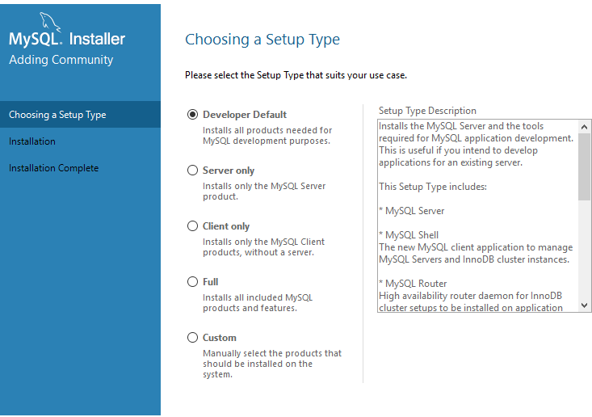

mysql的安装
1、在官网下载mysql文件https://dev.mysql.com/downloads/windows/installer/5.7.html
2、然后双击安装，如果出现一下错误，则到安装netdramework框架
3、安装的时候回让你选择版本

4、上面直接全部安装的，安装完成之后会有一个mysql5.7 command line client终端直接打开
5、show databases;查看数据库,记得后边的分号
6、采用navicat（图形化界面）来操作数据库，可以连接多种数据库
破解方法网址：https://www.cnblogs.com/runw/p/11802455.html此破解方法是12版本的
1、 下载navicat Premium12 网址https://www.navicat.com.cn这里下载的是12版本的
2、暂时用的是试用版
mysql驱动程序安装
1、使用django来操作mysql，pip install mysqlclient安装
常见的mysql驱动：
mysql-python：C语言操作mysql数据库的简单封装，只支持python2不支持python3mysqlclient：支持python并且修复了一些bugpymysql：纯python实现的一个驱动。因为是纯python写的，效率不如mysql-python，但可以和python代码无缝衔接。mysql Connector/Python：mysql官方退出纯python连接mysql驱动。因为是纯python开发的，效率不高。